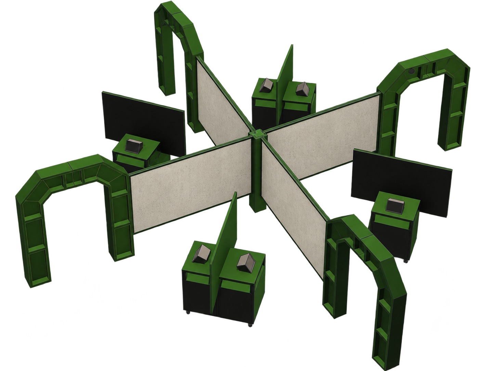
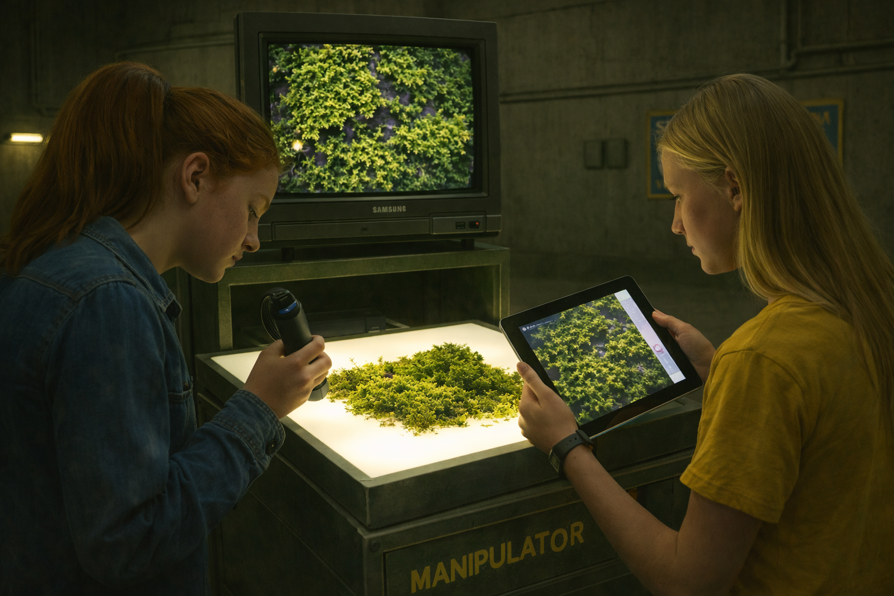
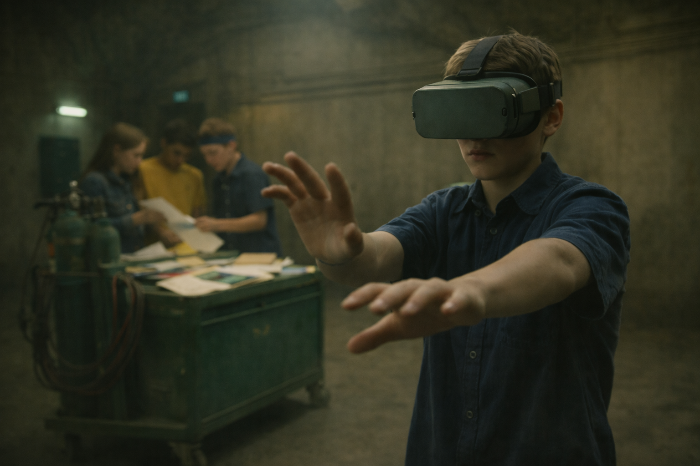
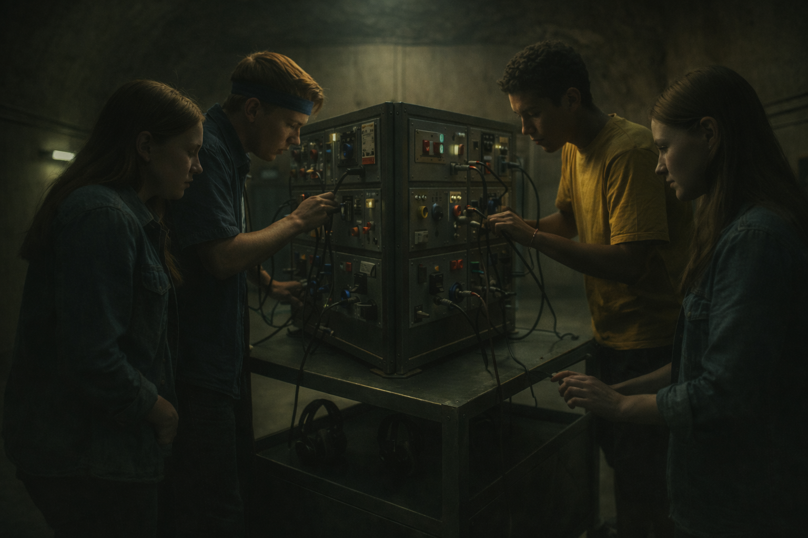
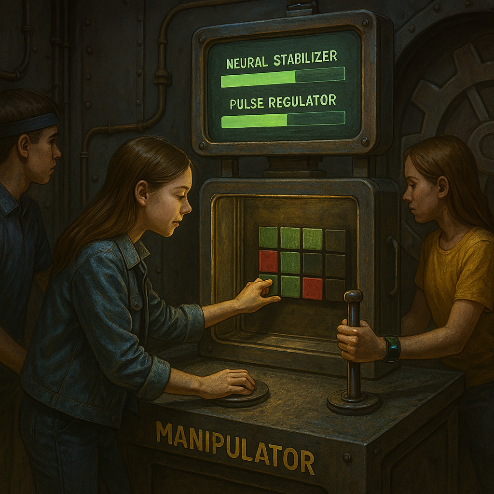
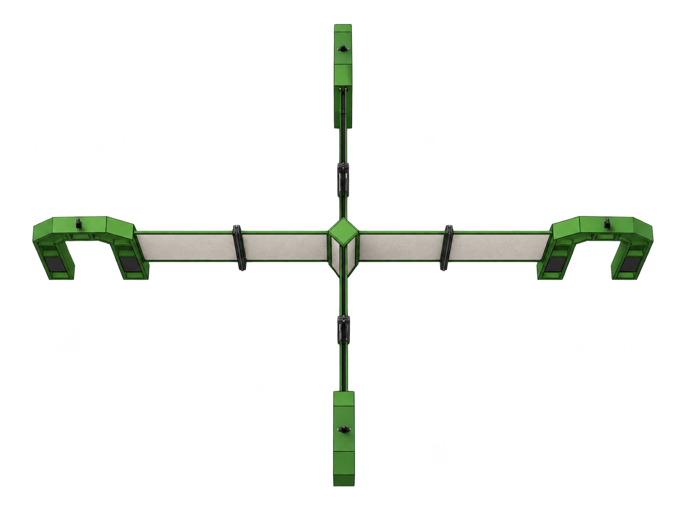
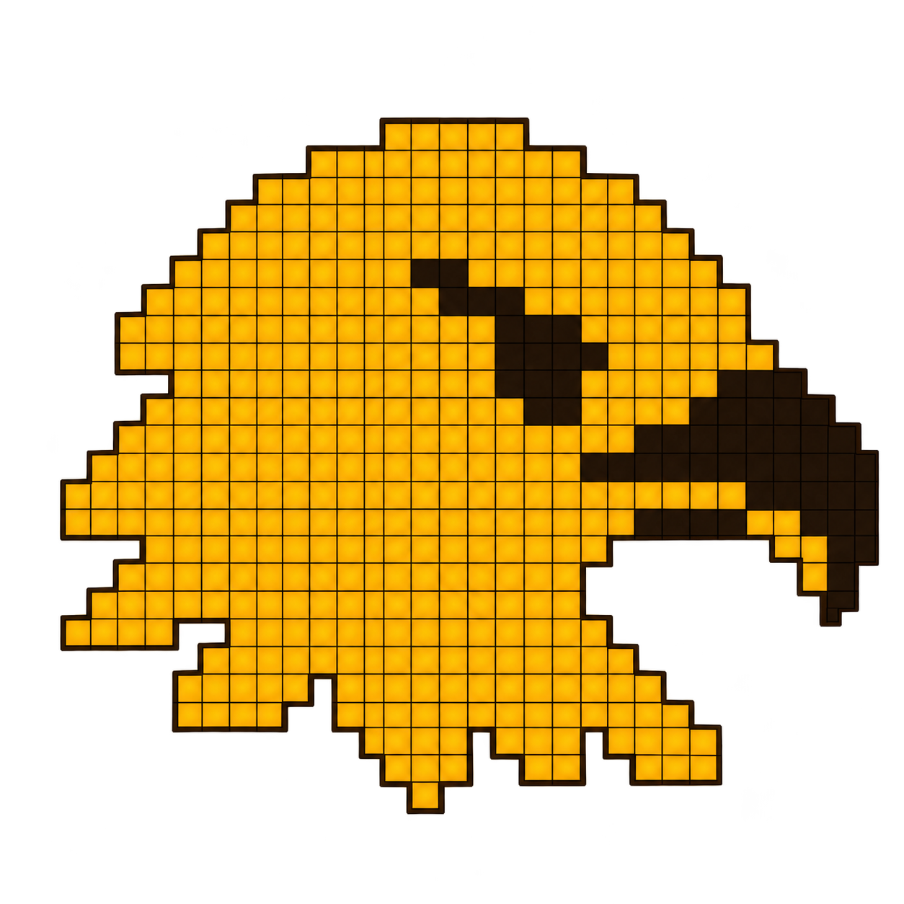
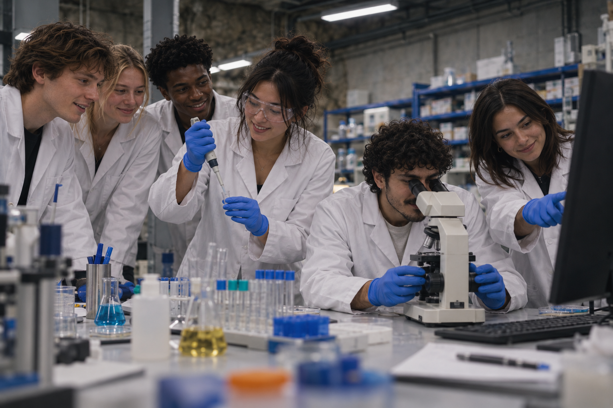

Vi har pratat med nästan alla studie- och yrkesvägledare i Dalarna. De beskriver samma sak: att få en elev att ens överväga ett yrke som bryter mot könsmönstret — en tjej att se sig inom teknik, en kille inom vård — är det svåraste de har, och det de känner att de inte rår på. De saknar verktyg som visar effekt.
Att vidga elevers val bortom kön ingår i det kompensatoriska uppdraget — samma grund som lovskola, studiehandledning på modersmål och extra anpassningar.
Elevers gymnasieval är starkt uppdelade efter kön — och uppdelningen har inte minskat på 50 år. Tjejer väljer vård och killar teknik i stort sett som på 1970-talet, trots flera reformer. Mellén, Göteborgs universitet
X&Y är framtaget tillsammans med ett internationellt forskningsnätverk kopplat till teorin om vetenskapligt kapital. I aktiviteten väljer 75–80 % enligt det förväntade könsmönstret — och inser då själva hur starkt kön styrt deras egna val.
Eleverna delas in i fyra grupper.
Grupperna rör sig mellan fyra stationer — varje station är en roll i det nya samhället.
Vid varje station löser de en samarbetsövning tillsammans: de fördelar uppgifter och väljer vem som gör vad, helt inne i berättelsen.
60–90 minuter per grupp. SYV håller i den avslutande delen.






Samma samarbetsövning presenteras olika för olika grupper.
Det påverkar hur de ser på uppgiften — och vilken roll de väljer under aktiviteten.
Efter genomförd aktivitet undersöker grupperna själva hur samma uppgift presenterades för dem och för en annan grupp — och jämför.

Till sist får eleverna omsätta insikten: vad betyder den för mina val framåt?
I en avslutande aktivitet möter de ett yrke i taget och tar ställning — kan jag se mig själv här? Höger för ja, vänster för nej.

Eleverna får syn på hur starkt kön styr deras val — en attitydförflyttning. Skolan levererar en del av det kompensatoriska uppdraget, med ett verktyg som visar effekt.
En mindre könssegregerad arbetsmarknad och en starkare kompetensförsörjning — i en region som behöver det.
Bättre matchning mellan människor och yrken, vilket också ger tillväxt. EIGE: upp till ~10 % högre BNP per capita i EU till 2050
Golvyta minst 7 × 7 meter.
Takhöjd minst 240 cm.
230 V eluttag.
Fungerar bäst via ethernet till det lokala nätverket.
Uppackning ca 8 timmar.
Nedpackning ca 8 timmar.
60–90 minuter per grupp.
SYV håller i den avslutande delen; lärare behöver inte delta.